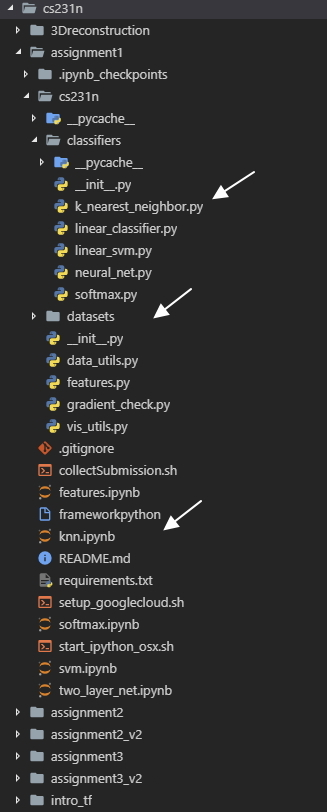
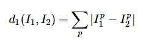
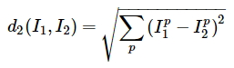
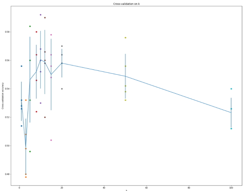

Постановка задачи и подготовка
Итак, мы перешли к практике для курса cs231n и первый пул задач Assignment #1: Image Classification, kNN, SVM, Softmax, Neural Network. В этой статье я разберу первую задачу — построение классификатора методом «k-ближайших соседей». Курс я прошел на задачах 2018-го года.
Давайте взглянем на структуру учебного проекта.

В корневом каталоге находятся jupyter блокноты, в которых вызываются функции из соответствующих классов для расчетов классификатора на предварительно обработанном наборе данных. В папке classifiers находятся модули, в которых определенны классы для расчета классификаторов. В папке datasets находится датасет CIFAR-10. Собственно в текущей задаче надо править knn.ipynb и k_nearest_neighbor.py
Обратите внимание, что перед началом нужно самостоятельно загрузить датасет. Чтоб не ходить кругами по интернетам, сделать это можно через лоадер непосредственно в папке datasets вот таким вот способом:
cd cs231n/datasets
./get_datasets.sh
Кроме того, там, где это необходимо в блокнотах я рекомендую выносить наверх ячейки вот эту строку кода, чтобы избегать неявных ошибок
from __future__ import print_function
Итак, что же нам необходимо сделать?
-
разобраться с принципами обработки данных для задач классификации изображений
-
разобраться в том, как реализуются обучение и прогнозирование
-
понять зачем и как данные делятся на обучающие, валидационные и тестовые выборки и как использовать валидационную выборку для тюнинга гиперапараметров
-
разработать эффективное (с точки зрения вычислительной сложности) решение
В первой же ячейке в knn.ipynb импортируется load_CIFAR10 из cs231n.data_utils. В нем задан основные инструменты обработки данных датасета. Советую внимательно изучить модуль — тут собираются тренинг/тестовые выборки для всех задач курса.
Немного теории
Для начала авторы курса предлагают разобраться, что из себя представляет задача классификации изображений. В первом задании рассматриваем хрестоматийную классификацию на основе алгоритма обучения с учителем nearest neighbor classifier, который на самом деле редко используется для классификации изображений. Ну нам повезло :)
Для начала, как сравнивать два различных изображения, например, изображения из CIFAR10 размерностью 32х32х3? В качестве простейшего способа используется вычисление разницы между векторами двух изображений, взятая по модулю. Сильно упрощая, для каждого пикселя первого и второго изображения считается разница, а затем результат суммируется. Собственно эта штука называется L1 distance.

В итоге задача формулируется предельно просто — нам нужно найти изображений, которые по L1 будут ближе всего к исследуемому. Ну т.е. определить «ближайших соседей». В данном случае, очевидно, что — это параметр, который определяет точность классификации. Чем больше это значение, тем больше «ближайших соседей» будет «захвачено» классификатором.
Для того, что бы реализовать эту концепцию, необходимо разделить данные на тренировочные, валидационные и тестовые. Часть данных послужит для обучения алгоритма, а на другой части мы будем тестировать результат обучения. По сути всё сводится к разбиению данных на выборки, подбору параметров, обучению модели, валидации и проверке результатов на тесте.
Вот как препроцессинг данных реализован в курсе:
def get_CIFAR10_data(num_training=49000, num_validation=1000, num_test=1000,
subtract_mean=True):
# Load the raw CIFAR-10 data
cifar10_dir = 'cs231n/datasets/cifar-10-batches-py'
X_train, y_train, X_test, y_test = load_CIFAR10(cifar10_dir) #1
# Subsample the data
mask = list(range(num_training, num_training + num_validation)) #2
X_val = X_train[mask]
y_val = y_train[mask]
mask = list(range(num_training))
X_train = X_train[mask]
y_train = y_train[mask]
mask = list(range(num_test))
X_test = X_test[mask]
y_test = y_test[mask]
# Normalize the data: subtract the mean image
if subtract_mean: #3
mean_image = np.mean(X_train, axis=0)
X_train -= mean_image
X_val -= mean_image
X_test -= mean_image
# Transpose so that channels come first
X_train = X_train.transpose(0, 3, 1, 2).copy() #4
X_val = X_val.transpose(0, 3, 1, 2).copy()
X_test = X_test.transpose(0, 3, 1, 2).copy()
# Package data into a dictionary
return {
'X_train': X_train, 'y_train': y_train,
'X_val': X_val, 'y_val': y_val,
'X_test': X_test, 'y_test': y_test,
} #5
Что мы видим? Объект с данными датасета (1) разбирается на тренировочный, валидационный и тестовый. Так как CIFAR10 размечен, сразу формируется массивы изображений и меток. Обратите внимание на параметры функции. Датасет в 50000 изображений делится на выборки в 49000 тренировочных, 1000 валидационных и 1000 тестовых объектов каждая. Формируются массивы с метками. Затем производится вычитание среднего изображения (это нужно для центрирования, об этом подробнее будет позже) (3) и на месте переопределяются объекты выборок в удобном для нас формате (4), после чего наконец возвращается (5) словарь с подготовленными данными.
В общем это такая фундаментальная процедура, которая в дальнейшем будет встречаться 100500 раз, поэтому разобраться ней стоит. Все классификаторы в задачах компьютерного зрения сводятся к построению функции train(X,y), которая работает с данными изображения и метками и функции predict(X), которая получает новые данные и предсказывает метки.
Собственно как это сделать для knn? Реализация приводится в статье к задаче:
import numpy as np
class NearestNeighbor(): #1
def __init__(self):
pass
def train(self, X, y): #2
self.Xtr = X
self.ytr = y
def predict(self, X): #3
num_test = X.shape[0]
Ypred = np.zeros(num_test, dtype = self.ytr.dtype)
for i in range(num_test):
distances = np.sum(np.abs(self.Xtr - X[i,:]), axis = 1) #4
min_index = np.argmin(distances) #5
Ypred[i] = self.ytr[min_index] #6
return Ypred
Здесь задан класс NearestNeighbor (1) и в нем две функции. Функция train (2) принимает изображения и метки, а функция predict (3) обходит всю тестовую выборку, чтобы вычислить L1 дистанцию (4), находит индекс объекта с наименьшей дистанцией (5) и возвращает предсказанную метку (6). Естественно, этот код не заработает в задаче :)
Задача
Вместо чего-то типа sklearn.neighbors.KNeighborsClassifier нам предлагается в classifiers/k_nearest_neighbor.py самостоятельно написать три функции:
- compute_distances_no_loops()
- compute_distances_one_loop()
- compute_distances_two_loops()
Зачем такое разнообразие? Авторы курса хотят продемонстрировать множество разных подходов и их влияние на сложность вычислений. Окей. Первую функцию, которую необходимо реализовать — это compute_distances_two_loops(). Тут идея в следующем: мы пишем два цикла, один вложен в другой. Во внешнем цикле мы обходим тренировочный сет на глубину тестового сета, во внутреннем на глубину тренировочного. Считаем дистанцию между тренировочными изображениями и искомым.
Обратите внимание, что в задаче требуют посчитать не L1 distance, а L2 distance. В лекции об этом подробно рассказывается. О чем идет речь? L2 distance - это геометрическая интерпретация евклидового расстояния между двумя векторами. Более простым языком:

L2 более строго оценивает расстояние между двумя векторами. Почему это так в курсе объясняется позже, я соответственно тоже разберу этот аспект в других статьях.
Далее, построив функцию в два цикла, строим compute_distances_one_loop(). Она ничем не отличается от функции в два цикла. Разница лишь в том, что мы обходим в один цикл на глубину тестового сета.
И, наконец, в функции compute_distances_no_loops() необходимо посчитать дистанцию без циклов, используя инструменты numpy. Чтобы решить эту задачу, надо знать, как расписать формулу L2 дистанции, и немного покрутить с размерностью массивов :) Можно как-то так:
dists = np.sqrt((X**2).sum(axis=1)[:, np.newaxis]
+ (self.X_train**2).sum(axis=1) - 2 * X.dot(self.X_train.T))
Всё, осталось добавить в наш k_nearest_neighbor.py функцию predict_labels. Для этого надо проитерировать по всей тестовой выборке и вернуть индексы ближайшего -го соседа -го изображения. В комментарии к задаче прямо пишут как это сделать (Hint: Look up the function numpy.argsort). Предсказываем метку, а затем возвращаем количество успешных предсказаний для каждой метки.
Запускаем ячейки, смотрим визуализации и через import time считаем время исполнения функций. Oneloop должен получиться где-то примерно в два раза дольше twoloop и в 100 раз хуже, чем noloop.
Про валидацию в задаче вопросов нет, зато есть про кроссвалидацию. Авторы курса объясняют этот метод следующим образом: вместо того, чтобы проходить валидацию по одному сету, можно сделать несколько, пройти по ним, а затем усреднить результат. Это долго, зато менее шумно. Ок.
Что надо сделать? В knn.ipynb необходимо разделить тренировочный сет на 5 сабсетов. Затем нужно прогнать по каждому сабсету наш алгоритм.
for k in k_choices:
for j in range(num_folds): #1
X_train_cross =
X_test_cross =
y_train_cross =
y_test_cross = #2
...
dists_cross = classifier.compute_distances_no_loops(X_test_cross) #3
...
accuracy = float(num_cross_correct) / num_test #4
k_to_accuracies[k].append(accuracy) #5
Мы будем прогонять цикл j раз (в задаче num_folds = 5) для каждого значения k из списка (в задаче k_choices = [1, 3, 5, 8, 10, 12, 15, 20, 50, 100]) (1). Построим тестовые и валидационные сабсеты (2), применим к ним наш самописный knn-классификатор (я обращался к самому быстрому classifier.compute_distances_no_loops()) (3), получим метки, посчитаем количество правильных (4) и вернем список по всему сету (5).
Дальше получаем вот такой график:

Вот и вся задача. Делаем вывод, что у нас k = 10 — зебест, выпиваем бокал шампанского и надуваем шарики.
Какой вывод делают авторы курса? KNN медленный, он перебирает весь сет попиксельно. В случае с изображениями данные многоразмерные и обработка алгоритма затратна. К тому же расстояния основанные на пикселях, не справляются с поврежденными изображениями. Поэтому переходим к следующим задачам курса :)